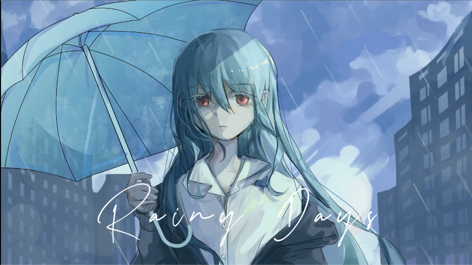

Rainy days

Art by Moshi
作品介绍
《Rainy days》写在冬天与春天之间，季节已经开始回暖。
发生在刚分开的懵懵的时间，醒来时发现又是一个空的早晨。
窗边那朵花是 Ipomoea alba，崩塌的瞬间像一个无声的提示，某些东西确实已经结束了。卡其色大衣是我那次去见他时穿的衣服，以至于后来每一次穿起都像触得到，却碰不到。生活里能留下的东西都还在，真正缺失的反而无法命名，只能在句子里停顿一下。
音乐上，《Rainy days》多次嵌入 Ipomoea alba 的旋律动机，像记忆在不同的角落反复浮现，而整首歌几乎没有段落的重复。不回头、不停顿，就那样一路走到底，像时间本身。☔️
歌词（Part 1）
Morning、また何もない朝だよ
窓辺のあの花は崩れてた
名前ももう忘れてしまった
「ヨル」がつく名前だった気がする
「今日はあのカーキ色のコートを着ようか
そのぬくもりはまだ残ってる
もう思い出せないのに この身体も
こんな生活に慣れてきた
ベースも、カメラも、手元に残ってる
出かけるなら革靴もここにある
欠けてるものといえば
そういえば…」
雨、降り注ぐ
私だけに ね
君は ここにいない
君に会う夢を見た朝
心臓が痛くて動けないな
もっと一緒に暮らしたいのに
いくら願っても触れられない
歌词（Part 2）
何度も君を描きたい
他のものなんて全部気にしない
どうしても離れたくないのに
思い出にしかならないのかな
どうすればいいのかわからない
もう何もできないな
何もいらない
空では雨が降ってるけど、
いつか晴れる日が来るでしょう。